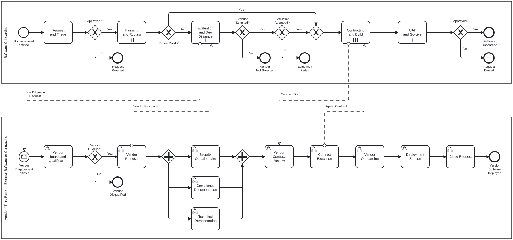
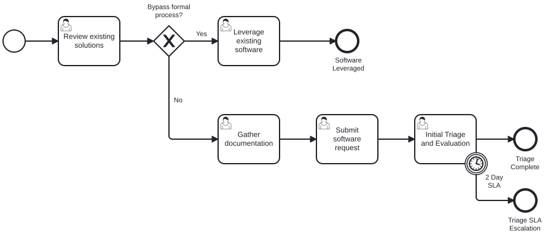
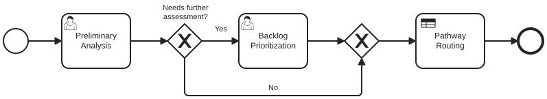
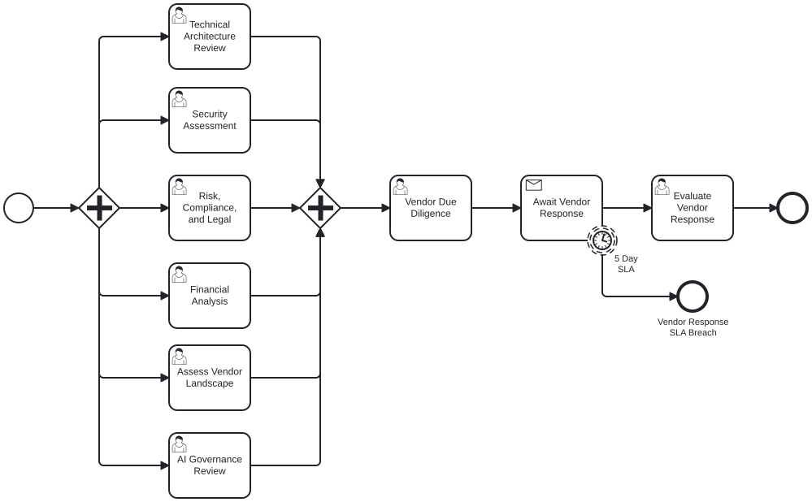
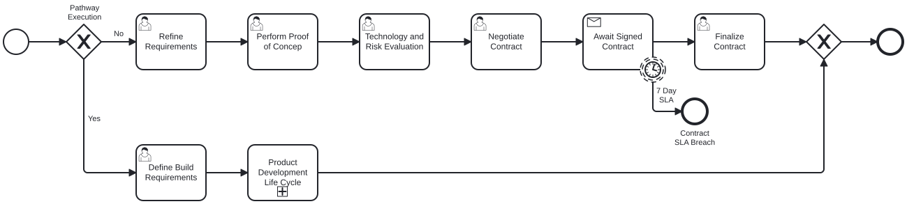
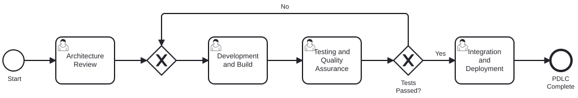
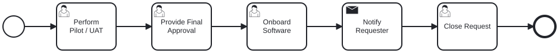

A structured 5-phase lifecycle replacing fragmented intake channels, 18 sequential committees, and months of delays with parallel evaluation, DMN-driven routing, and real-time visibility. Now informed by 14 discovery sessions with 35+ stakeholders.
Fourteen discovery sessions with 35+ stakeholders across 8 functional areas revealed a software onboarding process that takes 6-9 months, routes through 18 sequential committees, and accepts requests from 5+ disconnected channels. Five deep-dive sessions (Mar 5-6) exposed quantified bottlenecks: 28-day intake (2x target), 75-day due diligence, and a 2-person contract team handling 30+ negotiations monthly.
"Whoever screams loudest gets priority."
-- Security Architect, on current prioritizationServiceNow, AI forms, Power Apps, email, feedback platform -- same information submitted to multiple teams. Tool decay: forms show 2024 dates in 2026, owners left org.
Requesters independently contact each team, submit separate intakes. "It's completely on the onus of the requester." No visibility into sequence or timing.
Security: "I need three of me." Legal: 2 partners for all contracts. Architecture recently reduced. TPRM doubled output while cutting timeline -- at capacity.
Feb-Mar 2026: 35+ stakeholders across 8 functional areas including 5 deep-dive sessions with Product, Architecture, TPRM, Security Architecture, and Vendor Management. 24 process gaps documented.
| # | Theme | Severity |
|---|---|---|
| 1 | Fragmented Intake (5+ channels) | Critical |
| 2 | Sequential DART Formation | Critical |
| 3 | No Prioritization Standard | Critical |
| 4 | Contract Team Crisis (2 ppl/30+) | Critical |
| 5 | Security Capacity Bottleneck | Critical |
| 6 | AI Governance Complexity (60+ queue) | Critical |
| 7 | RAE 28d Actual vs 14d Target | High |
| 8 | DD 75 Days Internal Review | High |
| 9 | AI Questionnaire Proliferation (3 extra) | High |
| 10 | Tool Decay (locked forms, unknown owners) | High |
"I can understand 100% why requesters are frustrated."
-- Architecture Lead"That team desperately needs automation."
-- TPRM Lead, on contracting"The process never solved the step of a requester who's never been through onboarding."
-- Vendor Management Lead"Security is our biggest bottleneck... I need three of me right now."
-- Security ArchitectSeven systems support the onboarding process today. Most operate as data silos with manual PDF transfers between them. Only Ariba-Oracle has an API connection.
START process intake
No downstream integration
Registration, NDAs, contracts
API to Oracle
Risk assessments, tracking
Manual PDF exports
Accounts payable
API from Ariba
Architecture approvals
Plugin only, no workflow
Architecture ticket tracking
Per-team, no cross-view
Rapid risk, AI intake
Siloed, form decay
E2E process orchestration
Unified integration hub
Data moves between systems via email, PDF attachments, and manual re-entry. A single onboarding request touches 4-5 systems with zero automated handoff. Camunda 8 + OneTrust API integration creates the missing orchestration layer.
Deep-dive sessions with TPRM, Architecture, and Security surfaced hard metrics that replace anecdotal evidence with measurable baselines.
The current process is not one process -- it's multiple disconnected workflows stitched together with email, meetings, and institutional memory.
Every month the current process continues, the organization absorbs compounding risk. These are not hypothetical -- they are documented by stakeholders across 14 sessions.
A 5-phase structured lifecycle with 3-pathway routing, a concierge/quarterback model replacing sequential DART formation, simultaneous engagement of all review streams, and DMN-driven decision intelligence.
Replace 6-9 month ad-hoc cycles with a structured, DMN-driven 5-phase journey. Now with 3 request types, NDA gate, and simultaneous engagement. Phases 6-8 handed off to the full governance lifecycle.
Discovery revealed a fundamental third pathway -- Enable (Vendor Affinity) -- where the organization evaluates and approves but advisors purchase directly. v3 adds full detail on the Enable pathway and its financial bypass.
Organization purchases licenses, provisions software, bears full cost.
Internal development with PDLC sub-process. May include third-party components.
Evaluate and approve only -- advisors purchase directly from vendors. No org funding required.
"There's a model where we evaluate it, we approve it, and the advisors go ahead and buy it themselves."
-- Product Manager, describing the Enable/Vendor Affinity pathwayArchitecture's Governance Facilitator already demonstrates what good looks like: pre-screening, quality gates, follow-up management. This model extends E2E across all review streams.
Replace sequential DART formation with parallel engagement of all review streams. Architecture Lead's explicit recommendation -- directly addresses the "present the same thing over and over" problem.
"I disagree with that because that makes us a bottleneck... there should be simultaneous engagement of all the major players that have a vote."
-- Architecture Lead, rejecting sequential DARTThe BPMN model shows two pools: Enterprise Governance (collapsed sub-processes) and Vendor/Third Party (expanded tasks). Each collapsed box expands into a detailed sub-process. Now targeting Camunda 8 (Zeebe) with 39 JSON forms.

Enterprise Governance orchestrates internally. Vendor pool handles external communication via message flows.
DD Request, Vendor Response, Contract Draft, Signed Contract -- cross-pool communication at SP3 and SP4.
39 JSON forms (schema v16), zeebe:assignmentDefinition for role routing, zeebe:formDefinition for Tasklist integration.
v2 treated all requests identically. Discovery revealed three fundamentally different request types that require different process paths.
Business owner knows requirements, has vendor selected. Most common type.
Existing vendor, product changes: on-prem to SaaS, EOL, new AI capabilities. Growing volume.
Advisory support, no sponsorship, generating interest. Currently clogs the standard pipeline.
"That's a fantastic idea that should be in the slides."
-- TPRM Lead, on shift-left / mini-RFP for business users
Single entry point absorbs all 5+ channels including informal submissions. Dynamic routing based on request type. Eliminates duplicate submissions.
"The process never solved the step of a requester who's never been through onboarding."
-- Vendor Management LeadMandatory NDA execution after initial triage, before detailed evaluation. Security and Legal align on early NDA. Prevents proprietary information exchange without legal protection.
DMN-driven check against managed no-go list. Certain AI models are "complete no-gos" -- reject immediately with explanation rather than consuming weeks of review capacity.
Automated screening before reaching SME review. AI-assisted pre-screening validates minimum viable fields. Addresses the 40%+ rework from incomplete submissions.


All 5 evaluation streams triggered simultaneously by concierge. No requester burden. Bounded by slowest stream SLA, not sequential queue.
Risk-based categories from Security Architect replace one-size-fits-all review:
Zeebe service tasks create OneTrust assessments, retrieve results. Risk scores feed DMN routing. Replaces manual PDF transfers between systems.
Merge 3 extra AI questionnaires into single dataset. Single vendor contact point for AI reviews (currently 3x). TPRM Lead already in progress on merger.

Automated standard-terms review. OneTrust deviation tracking. Compliance status for legacy contracts. Target: reduce 30+/month manual burden by 50%+.
"That team desperately needs automation."
-- TPRM LeadBuild pathway enters nested PDLC sub-process: Architecture Review, Development, Testing & QA, Integration Testing -- with retry loop on test failures.
Minor corrections (dates, coding matrix) loop back without formal denial. Only substantive issues require process restart.
Vendor Affinity tools require no org funding but process still requires funding validation. Enable path explicitly bypasses financial analysis.
When the Build pathway is selected, SP4 contains a nested PDLC sub-process that governs internal development with quality gates.

HLD required for ALL acquisitions. Then SD/SYDD (single domain) or PSS (cross-enterprise, most AI products). ARB 2-week SLA, SDRB same-day for well-prepared teams.
If QA tests fail, loop back to development via merge gateway. No manual restart required -- automatic retry pattern.
Architecture already uses Cursor AI for diagram generation and custom AI agent for pattern conformance. Integrate into quality gates.

Three outcomes: Approved, Approved with Conditions (monitoring timer), Rejected. Enables "we want it by Q2 but controls not ready until Q3" scenario.
Before close: Business Owner (executes agreement) + Vendor Owner (manages relationship). Dual ownership model with clear accountability. Feeds CMDB.
Cross-lane notification pattern: notify the initiating lane before process end. End event in same lane as start event for visual symmetry.
Governance record: executed contract, controls baseline, regulatory attestations, risk tier, DMN routing history, compliance package, OneTrust assessment results.
The Vendor/Third Party pool runs in parallel with Enterprise Governance. Cross-pool communication via 4 message flows at SP3 and SP4.
| Message Flow | Phase | Content |
|---|---|---|
| DD Request | SP3 | Due diligence questionnaire (830 Qs with skip logic) |
| Contract Draft | SP4 | MSA/SLA terms, security controls baseline |
| Message Flow | Phase | Content |
|---|---|---|
| Vendor Response | SP3 | Completed questionnaire, SOC2/ISO certs, evidence |
| Signed Contract | SP4 | Executed MSA, countersigned terms |
Vendor pool: Intake & NDA, Proposal Preparation, Technical Demo, Security Review, Compliance Review, Contract Review, Contract Execution, System Onboarding, Deployment Support, Close & Confirm. Each with SLA timers and boundary escalation events.
OneTrust Assessment Automation and TPRM module integrate with Camunda 8 at two critical touchpoints in SP3, replacing manual PDF transfers with automated service task patterns.
Every routing decision is driven by a DMN 1.3 decision table -- not hardcoded logic. Business rules updated without changing the process model.
BPMN Business Rule Tasks invoke DMN tables at decision points. Gateway reads DMN output (e.g., riskTier, selectedPathway) to route flow. OB-DMN-2 now accepts requestType as input for 3-type routing.
| ID | Name | Hit Policy | Inputs | Outputs | Used In |
|---|---|---|---|---|---|
| OB-DMN-1 | Risk Tier Classification | UNIQUE | 5 risk dimension scores (1-10) | riskTier, onboardingEligible | Phase 1-2 |
| OB-DMN-2 | Pathway Routing | UNIQUE | capabilityReuse, buildVsBuy, capacity, requestType, isExistingVendor | pathway | Phase 1 |
| OB-DMN-3 | Governance Review Routing | UNIQUE | riskTier, selectedPathway | reviewBody, reviewSLA | Phase 4 |
| OB-DMN-4 | SLA Breach Escalation | FIRST | breachedPhase, daysBeyondSLA, riskTier | escalationAction, maxExtension | All phases |
| Data Sensitivity | Regulatory | Operational | AI Complexity | 3rd Party | Risk Tier | Eligible? |
|---|---|---|---|---|---|---|
| ≥ 9 | - | - | - | - | Unacceptable | false |
| [7..8] | [7..8] | [7..8] | - | - | High | false |
| [4..7] | [4..8] | [4..8] | [1..8] | [1..8] | Limited | true |
| [1..3] | [1..5] | [1..5] | [1..5] | [1..5] | Minimal | true |
| Request Type | Analysis | Existing? | Pathway |
|---|---|---|---|
| Forced Update | - | true | Re-Eval |
| Speculative | - | - | Idea Funnel |
| Defined | Build | - | Build |
| Defined | Buy | - | Buy |
| Defined | Enable | - | Enable |
Four-level escalation ladder with auto-reject. FIRST hit policy. Every phase has boundary timer events linked to this table.
| Phase | Days Beyond | Risk Tier | Action | Extension |
|---|---|---|---|---|
| Any | ≥ 10 | High | Auto-Reject | 0 days |
| Any | ≥ 15 | Limited/Min | Auto-Reject | 0 days |
| 3-5 | [5..9] | High | Board-Alert | 3 days |
| Any | [2..4] | High | Escalate-Gov | 2-3 days |
| Any | 1 | High | Notify-Sponsor | 2 days |
Each governance topic maps to specific tasks, roles, and regulatory hooks. R=Responsible, A=Accountable, C=Consulted, I=Informed.
| Topic | Business | Governance | Finance | Procurement | Contracting | Tech Assessment | AI Review | Compliance | Oversight |
|---|---|---|---|---|---|---|---|---|---|
| Intake | R/A | C | C | C | |||||
| Prioritization | C | R/A | C | C | |||||
| Funding | C | R/A | C | I | |||||
| Sourcing | A | R | C | C | I | ||||
| Cyber | C | R/A | C | ||||||
| EA | C | R/A | |||||||
| Compliance | C | R/A | C | ||||||
| AI Governance | I | C | R/A | C | |||||
| Privacy | C | C | R/A | ||||||
| Comm. Counsel | C | C | R/A | C | I | ||||
| TPRM | R/A | C | C | C | C | C |
6-tier risk assessment, own meeting cadence
ARB/SDRB, domain assignment, AI pre-screen
Contract templates, deviation tracking
Consolidated review, risk posture
OneTrust integration, vendor scoring
v3 adds 8 new gaps (GAP-17 through GAP-24) from the 5 deep-dive sessions. Prioritized by business impact and stakeholder urgency.
| Gap | Description | Priority | Sub-Process |
|---|---|---|---|
| GAP-1 | Unified Intake Gateway | P1 | SP1 |
| GAP-2 | Formal Prioritization Scoring | P1 | SP2 |
| GAP-17 | NDA Gate (before detailed eval) | P1 | SP1-SP3 |
| GAP-18 | Concierge / Quarterback Role | P1 | Cross-cutting |
| GAP-19 | Simultaneous Engagement | P1 | SP3 |
| GAP-20 | Contract Automation (2 ppl / 30+/mo) | P1 | SP4 |
| GAP-23 | AI Questionnaire Consolidation | P1 | SP3 |
| GAP-7 | Status Visibility / Notifications | P1 | Cross-cutting |
| GAP-9 | Completeness Quality Gate | P1 | SP1 |
| GAP-11 | 3-Pathway Routing (Buy/Build/Enable) | P1 | Top-level |
| GAP-16 | Deal-Killer Pre-Screen | P1 | SP1 |
| GAP-12 | Security Baseline Controls (6-tier) | P1-P2 | SP3 |
| GAP-6 | AI Fast-Track Pathway | P1-P2 | SP3 |
| GAP-21 | OneTrust Integration | P2 | SP3-SP4 |
| GAP-22 | Distributed Pod Model | P2 | Org design |
| GAP-24 | Async Governance Decisions | P2 | Cross-cutting |
| GAP-3 | Progressive Form Strategy | P2 | SP1-SP3 |
| GAP-4 | Finance Rework Loop | P2 | SP4 |
| GAP-10 | Workload Visibility Dashboard | P2 | Platform |
| GAP-13 | Time-Bound Conditional Approval | P2 | SP5 |
| GAP-14 | Mandatory Ownership Assignment | P2 | SP5 |
| GAP-8 | Exception Routing | P3 | SP1 |
| GAP-15 | Pre-Onboarding Idea Funnel | P3 | Pre-SP1 |
The contracting function is in crisis. 2 people handling 30+ contracts monthly for 4 years. No automation, no reportable deviation tracking, unknown compliance status for legacy contracts.
Automation investment is justified by documented resource constraints. Every function is at or beyond capacity.
| Function | Current Staff | Workload | Gap Assessment |
|---|---|---|---|
| Risk / DD | 8 people | 335 assessments/year | At capacity -- doubled output while cutting timeline 50% |
| Legal / Contracts | 2 people | 30+ contracts/month | Critical -- "dumpster fire" for 4 years |
| Architecture | 2-3 people | All acquisitions need HLD | Recently reduced. Funding-constrained by domains |
| Security (AI) | ~1 person | Growing AI review volume | "I need three of me right now" |
| Vendor Mgmt | 6 total (2 at 50%) | Full process facilitation | No formal onboarding allocation |
| Tech Vendor Mgmt | 1 part-time | Full START process | Inadequate for scope |
"If we want this to really click... I can't have the architect review group being a critical portion with only two people."
-- TPRM LeadPhased approach: planning first (no automation in Day 30), then progressive automation. v3 adds concierge model, simultaneous engagement, OneTrust integration, and contract automation to the timeline.
Planning + executive alignment
First deployments + AI consolidation
Full parallel evaluation + automation
Measurement + optimization
Zero automation. Planning artifacts that define standards and rules. v3 adds concierge role, NDA resolution, OneTrust mapping, and capacity baselines.
First measurable cycle time reduction. Unified intake live, AI questionnaires merged, simultaneous engagement piloted.
Structural BPMN changes live: 3-pathway routing, 5 parallel streams with concierge orchestration, OneTrust automation, tiered security assessment.
Advanced automation, dashboards, and specialized pathways. Before/after metrics documented for executive review.
Data-driven proof of improvement. Baselines documented from discovery; targets calibrated against competitor benchmarks and stakeholder capacity.
| Metric | Baseline (Current) | Day 120 Target | Source |
|---|---|---|---|
| E2E cycle time (standard) | 6-9 months | 60-90 days | All sessions |
| E2E cycle time (Enable) | Same as standard | 30 days | Product Manager |
| E2E cycle time (AI fast-track) | Same as standard | 14 days | Security Architect |
| RAE completion | 28-29 days | 14 days | TPRM Lead |
| DD internal review | 75 days | 30 days | TPRM Lead |
| Security review (Baseline) | 2 weeks | Same-day (automated) | Architecture Lead |
| Form completion rate | Unknown | 90%+ first-pass | Legal Director |
| Contract cycle time | Varies (up to 1.5yr) | 90 days standard | TPRM Lead |
| Business Council decision | Monthly + email | 48-hour async SLA | Vendor Mgmt |
| Queue transparency | None | Real-time dashboard | Operations Director |
Discovery complete. 14 sessions, 35+ stakeholders, 24 gaps identified, 8 new from deep-dive sessions. The 30/60/90/120-day roadmap begins with foundation and alignment.
Present data-backed discovery findings. Resolve NDA timing. Confirm committee consolidation. Assign owners to Day 30 deliverables.
Draft concierge/quarterback role. Define simultaneous engagement rules. Map Architecture Facilitator pattern for E2E extension.
Prioritization formula, 6-tier security assessment, 3 request types, OneTrust API mapping. Baseline all metrics from discovery data.
Unified intake live, NDA gate active, AI questionnaires merged, simultaneous engagement piloted. First measurable cycle time reduction.